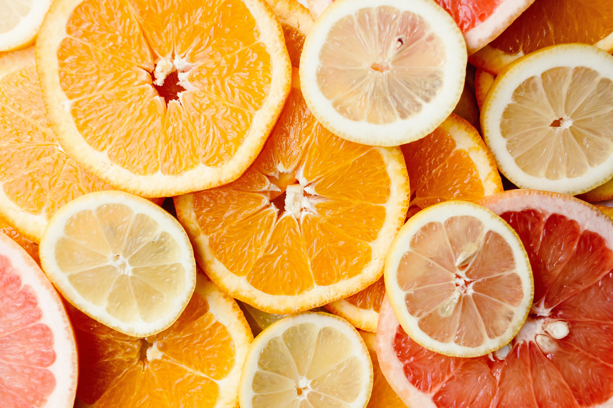
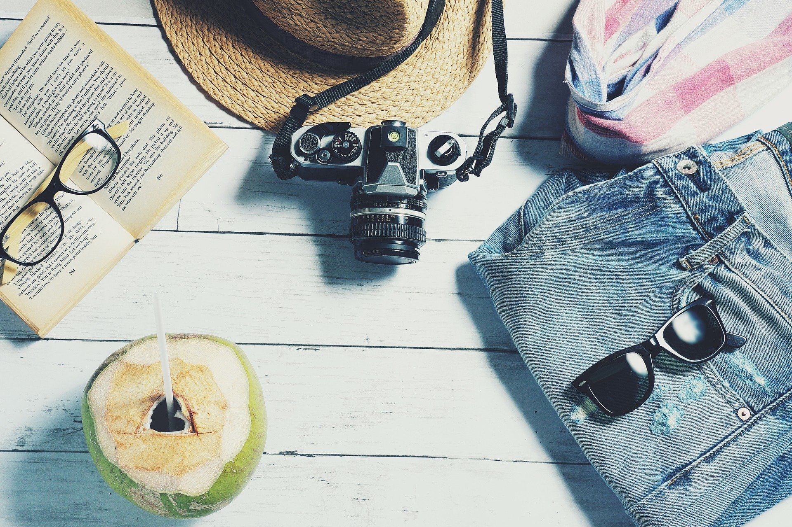

My name is Franziska Ostermai and I am Web Developer.
I do love change, which you will also see in my labor experience and studies! I studied economics, but I have always been curious and eager to learn and try out new things - in all areas of life.
I have now developed myself in the area of web development and discovered my passion in web design, especially the front end development. With html and css I created and designed this website by myself.
Since I finished my masters degree in marketing I have been looking for my dream job, because it is very important for me to do what I love to do and have fun working. Who doesn't? ;)
Since my passion is to travel the world, explore and being connected to the nature, I would appreciate a job that allows me to work partially remote.
In this case I would like to quote the book "The Why Cafe" by John P. Strelecky - and I totally agree: “Why is it that we spend so much of our time preparing for when we can do what we want, instead of just doing what we want right now?”
So: What are you waiting for?!
This portfolio should give you an idea of my personalty, my labor experience, skills and projects I've done.
I am also happy to receive some feedback or suggestions. Have fun reading!
This Is Me



SPORTS
I am a happy bubbly woman who apparently still doesn't understand that she is almost 30 years old! I live according to the motto: life is too short to do things you don't like.
So: Carpe Diem!
One of my needs is definitely SPORTS! At the age of four I started ballet and athletics and tried various sports. Horse riding, tennis, yoga, surfing, handball, volleyball (thank you mom for going through all of this!!).
In the end, I realized that I can feel enthusiasm for almost every kind of sports and that I also want to try out a lot of different ones in my life.
Every sport has its unique value. Yoga is for the balance, the body sensation and control. On the other hand, surfing is absolutely exciting and gives that certain kick whereas dancing is connected with this social aspect and lively music which means balm for the soul
I am a happy bubbly woman who apparently still doesn't understand that she is almost 30 years old! I live according to the motto: life is too short to do things you don't like.
So: Carpe Diem!
One of my needs is definitely SPORTS! At the age of four I started ballet and athletics and tried various sports. Horse riding, tennis, yoga, surfing, handball, volleyball (thank you mom for going through all of this!!).
In the end, I realized that I can feel enthusiasm for almost every kind of sports and that I also want to try out a lot of different ones in my life.
Every sport has its unique value. Yoga is for the balance, the body sensation and control. On the other hand, surfing is absolutely exciting and gives that certain kick whereas dancing is connected with this social aspect and lively music which means balm for the soul
FOOD
I just can't get around it. Good food is simply life!
Cross your heart: after a healthy meal you not only feel better, it also tastes better!
Whether I cook or eat out, I always choose vegetarian food and also mostly vegan. There are now many studies that prove that plant-based diets are more beneficial to your health than animal based diets - and the meat no longer provides the nutrients that it is supposed to through all this mass production.
Apart from that, I'm just an animal lover and like to avoid meat to save an animal life. There are so many awesome recipes with vegan ingredients and I really enjoy to try them out.
In the end it is true:
we are what we eat!
So what are you?
You got curios about vegan food?
You can find more about this in my food blog
I just can't get around it. Good food is simply life!
Cross your heart: after a healthy meal you not only feel better, it also tastes better!
Whether I cook or eat out, I always choose vegetarian food and also mostly vegan. There are now many studies that prove that plant-based diets are more beneficial to your health than animal based diets - and the meat no longer provides the nutrients that it is supposed to through all this mass production.
Apart from that, I'm just an animal lover and like to avoid meat to save an animal life. There are so many awesome recipes with vegan ingredients and I really enjoy to try them out.
In the end it is true:
we are what we eat!
So what are you?
You got curios about vegan food?
You can find more about this in my food blog
NATURE
If there is one thing i would never get enough of, it is mother nature!
That's probably why I love traveling and prefer to see places I haven't been to, instead of repeating the same places. There is just so much to discover in this world and every continent and country is unique and has such wonderful treasures.
Here I live according to the motto:
Collect moments, not things.
Whether it is mountains, beaches, waterfalls, volcanoes, jungle or underwater worlds, I love all vegetation in all climatic conditions.
I have traveled a lot so far, and yet I have the feeling that the list is endless and life is too short to complete this list. However, remote work gives you the opportunity to work from anywhere you want, which is why I'm traveling now in the digital world - and at the same time everywhere in the real world, because: the world is my home
If there is one thing i would never get enough of, it is mother nature!
That's probably why I love traveling and prefer to see places I haven't been to, instead of repeating the same places. There is just so much to discover in this world and every continent and country is unique and has such wonderful treasures.
Here I live according to the motto:
Collect moments, not things.
Whether it is mountains, beaches, waterfalls, volcanoes, jungle or underwater worlds, I love all vegetation in all climatic conditions.
I have traveled a lot so far, and yet I have the feeling that the list is endless and life is too short to complete this list. However, remote work gives you the opportunity to work from anywhere you want, which is why I'm traveling now in the digital world - and at the same time everywhere in the real world, because: the world is my home
DANCING
One of my greatest passions: Dancing!
I started jazz dance as a little girl, but over the years and especially on my trip to south america I came across latin-american rhythms.
I decided to take salsa classes and then it happened:
I realized I was crazy about it!
I've been dancing for seven years now and have tried different dancing styles besides salsa. In addition to various salsa styles such as cuban and LA, I have learned a few bachata styles and african rhythms such as semba, kizomba and zouk.
I love to go dancing after work and move to the lively music. Time flies by and sometimes I find myself in a flow moment, and I don't want this dance to stop.
So the answer is yes, dancing is highly recommended to everyone
- but there is a high
risk of addiction
One of my greatest passions: Dancing!
I started jazz dance as a little girl, but over the years and especially on my trip to south america I came across latin-american rhythms.
I decided to take salsa classes and then it happened:
I realized I was crazy about it!
I've been dancing for seven years now and have tried different dancing styles besides salsa. In addition to various salsa styles such as cuban and LA, I have learned a few bachata styles and african rhythms such as semba, kizomba and zouk.
I love to go dancing after work and move to the lively music. Time flies by and sometimes I find myself in a flow moment, and I don't want this dance to stop.
So the answer is yes, dancing is highly recommended to everyone
- but there is a high
risk of addiction
My Projects
However, this portfolio gives me space to explain how to use iMovie and other programs so you can concentrate on the creative side of building your own unique webpage.
I will share my tips & and tricks here in my projects. Feel free to use styles and templates as inspiration for your own project!
 Web Design with HTML & CSS
Web Design with HTML & CSS
As I told you already I recently did a course for web development thus this is my latest project I have been working on.
You are interested in learning the basics of html and css?
Then feel free to klick here and find out about the world of how to create your own website! It is more fun than one may think ;)
 FOOD!
FOOD!
Who doesn't love food?
Although this website is all about web development, this part could not be left out of my portfolio. Thus, this is an essential part of my projects, where all my passions get linked to eachother:
I created a website with all different types of food, cuisines all over the globe while I have been travelling.

I'm out!
I do love travelling! I couldn't create a webpage without having a travelblog. I have been to 40 countries already so of course I don't want to withhold my experiences and stories during my trips.
You got curios about my trips?
Then you should check this out!
I do love travelling! I couldn't create a webpage without having a travelblog. I have been to 40 countries already so of course I don't want to withhold my experiences and stories during my trips.
You got curios about my trips?
Then you should check this out!
How to edit videos with i Movie
Video editing with iMovie is super easy and so much fun! Basically it enables you to create an entire video on a professional level.
Klick on the video to learn about all features in iMovie.
Stay tuned!
Video editing with iMovie is super easy and so much fun! Basically it enables you to create an entire video on a professional level.
Klick on the video to learn about all features in iMovie.
Stay tuned!
Videos vs. Photobooks
During my trip to Malaysia, I created this video with iMovie. It is such a nice memory and at the same time it gives you a short summary of 10 fun things to do.
You got tired of albums and 1000 of pictures?
Then create your own souvenir & make a fun video!
During my trip to Malaysia, I created this video with iMovie. It is such a nice memory and at the same time it gives you a short summary of 10 fun things to do.
You got tired of albums and 1000 of pictures?
Then create your own souvenir & make a fun video!
Tips & Tricks
In this video you'll get insights of some helpful tools and techniques for your video editing.
LITTLE TRICKS BUT HUGE IMPACT!
Develop your editing skills with these tricks and make your videos look more professional!
In this video you'll get insights of some helpful tools and techniques for your video editing.
LITTLE TRICKS BUT HUGE IMPACT!
Develop your editing skills with these tricks and make your videos look more professional!
My Resume
Franziska Ostermai
IT Sales Manager & Digital Creator
IT Sales Manager & Digital Creator
Labor Experience
Since 2020
Front-end Developer
Freelancer for digital projects
2017 - 2019 • Melitta Europa GmbH
Sales Manager
Supervision of the entire sales process for all food retailers in Berlin & Brandenburg
2015 - 2017 • Peek & Cloppenburg KG
Trainee
Deputy Store Manager & department manager of men premium apparel
2013 – 2014 • Bahlsen GmbH & Co.KG
Internship
Market Research
Since 2020
Front-end Developer
Freelancer for digital projects
2017 - 2019 • Melitta Europa GmbH
Sales Manager
Supervision of the entire sales process for all food retailers in Berlin & Brandenburg
2015 - 2017 • Peek & Cloppenburg KG
Trainee
Deputy Store Manager & department manager of men premium apparel
2013 – 2014 • Bahlsen GmbH & Co.KG
Internship
Market Research
IT Skills
Microsoft Office • Photoshop • Adobe Illustrator • Photshop, SAP • SPSS • Crystal Ball • Nielsen
HTML • CSS • JavaScript
SEM/ SEO • Google Analytics • Google Ads • Social Media • E-Mail Marketing
Microsoft Office • Photoshop • Adobe Illustrator • Photshop, SAP • SPSS • Crystal Ball • Nielsen
HTML • CSS • JavaScript
SEM/ SEO • Google Analytics • Google Ads • Social Media • E-Mail Marketing
Education
- 2015 - 2016
Marketing (M.Sc.) - 2011 - 2015
Business Administration (B.A.) - 2002 - 2010
A-levels (1.8)
"No risk, no fun!"
This is my motto! And if you believe it or not, it has payed off several times.
Getting out of the comfortzone and being open for change is the most valuable we can do in order to develop ourselves!
- In the end, it is not the wrong decision we regret, it is the decision we've never made.
Stop waiting for doors to open themselves, be proactive and open them yourself :)
Write me!
If you have any questions or feedback, please leave a message!